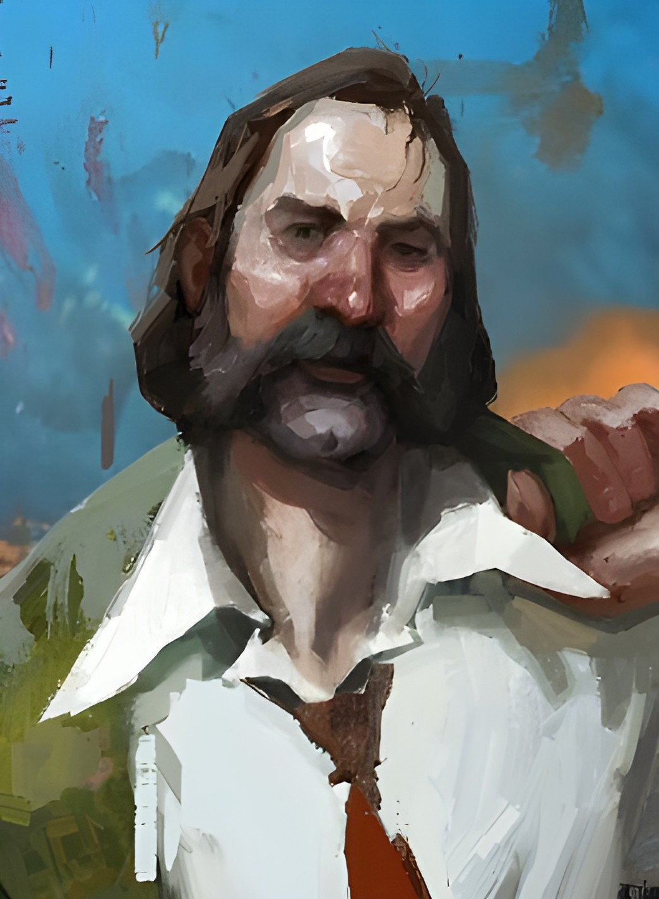
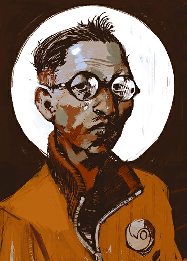

The Videogame - Personaggi

Harry Du Bois
Un tempo uno dei detective più brillanti e implacabili di Revachol, Harry è ora un uomo distrutto che cerca di ricomporre i pezzi della propria mente e della propria identità. Risvegliatosi in una stanza d'albergo a Martinaise senza alcun ricordo del suo passato — compreso il suo stesso nome —, si trova a dover risolvere un intricato caso di omicidio mentre naviga nel caos dei suoi pensieri. Guidato (o perseguitato) dalle voci interiori delle sue stesse abilità, Harry è una variabile impazzita: un investigatore imprevedibile le cui decisioni possono oscillare tra l'intuizione geniale e il disastro totale.

Kim Kitsuragi
Ancora di salvezza e bussola morale dell'indagine, il Luogotenente Kitsuragi è l'esatto opposto del suo improvvisato partner. Professionale, pacato e dotato di una pazienza quasi infinita, Kim incarna la dedizione al dovere e la precisione metodica. Armato del suo inseparabile taccuino e di un'incrollabile etica del lavoro, osserva il mondo attraverso le sue lenti rotonde con uno sguardo analitico e mai giudicante. Nonostante le eccentricità e i continui sbandamenti di Harry, Kim rimane un alleato leale e indispensabile, pronto a garantire che l'indagine non deragli nel caos.